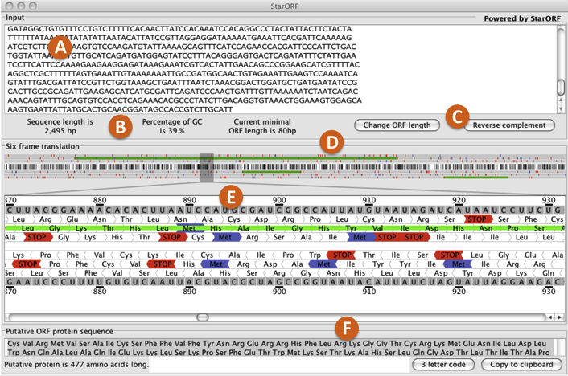

A) Sequence box: where to enter the DNA sequence.
B) Sequence information: summary of the length, the GC content of the sequence entered and the minimal Open Reading Frame (ORF) length specified.
C) Change ORF length and Reverse complement buttons: the “Change ORF length” button allows for specification of the minimal length that a sequence can be considered as an ORF. The “Reverse complement” button converts the sequence entered into its complement, represented in the 5' to 3' direction.
D) 6-frame translation overview area: graphical representation of the transcribed sequence entered. White represents areas with 0% GC content. Black represents areas with 100% GC content. The tick marks above and bellow the graphical sequence representation correspond to start codons (purple) and stop codons (red). The green horizontal bars above and bellow the graphical sequence representation indicate areas with potential ORFs. Each green bar corresponds to a sequence segment that is bordered by stop codons. Both tick marks and green bars are separeted into three top levels, corresponding to the forward translation frames, and three bottom levels corresponding the reserve translation frames.
E) 6-frame translation magnification area: this area represents a section within the sequence that has been magnified. The section represented is highligthed with a narrow gray box. Moving the slider or the gray box in either direction allows for a different part of the sequence to be magnified. The top and bottom sequence within this section corresponds to the transcribed RNA sequence of the DNA segment entered (forward orientation) and its reserve complement (reserve orientation). Invididual RNA bases are numbered for reference. Underneath each RNA sequence are the amino acid sequences corresponding to the three forward and the three reverse translation frames, indicated by the direction of the amino acid shape. Amino acids are represented by their 3 letter abreviation. Stop codons are indicated in red, methionines (Met) in purple, and areas with a stop codon on either side (areas with potential ORFS) as solid green bars.
F) ORF protein sequence box: amino acid sequence for a particular area that might contain an ORF (green bar). This information can be obtained by clicking anywhere within a green bar in the translation magnification area (E). The representation of the amino acid sequence can be changed from the 3 letter amino acid abreviation to the 1 letter code by clicking on the “3 letter code” button. The total length of the amino acid sequence is indicated bellow the field box. To copy the amino acid sequence, click on the “Copy to clipboard” button.